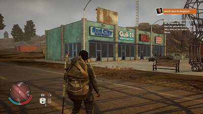

RESEÑA - STATE OF DECAY 2
Para muchos, los juegos de Zombies ya murieron, pero no pueden estar más alejados de la realidad, este personaje de la ficción ayuda increíblemente para crear tanto historias interesantes, como mecánicas de juego, eso lo saben muy bien Undead Labs ya que la secuela de su ópera prima, State of Decay, ha llegado a nosotros para que los pocos pero enardecidos fanáticos puedan deleitarse derrotando zombies a diestra y siniestra de las formas más originales y creativas en búsqueda de la permanencia en este mundo en el que la alegría es cosa que solo se lee en los cuentos de hadas.
Esta nueva iteración en la franquicia nos sumerge en una fantasía completamente nueva de supervivencia zombie multijugador. El objetivo principal es construir una comunidad que perdure, y trabajaremos con otros jugadores, o solos, para sobrellevar los retos mientras exploramos nuestra historia única en un mundo que recuerda y refleja nuestras decisiones. Undead Labs, quienes están asociando con Microsoft Studios para este nuevo juego ahora han hecho una interesante labor para que esta exclusiva del Xbox One llegue con todas las asistencias posibles para que más jugadores se puedan aproximar a este mundo, que por cierto, se aplaude desesperadamente esta exclusiva porque si algo necesita la consola de Microsoft actualmente, eso es juegos exclusivos para su consola.

Después de una etapa algo extensa de retrasos, por fin su estudio pudo concretar la fecha de salida y ahora, justo a tiempo para los poseedores de un Xbox One, cuando este este título llegará a las estanterías de manera exclusiva tanto para el Xbox One como su primo Windows 10. Ah, también le agregamos el detalle de que este será un título que se añade al catálogo del Xbox Play Anywhere, lo que significa que podremos jugarlo en ambas plataformas con una sola compra.
Al igual que con el juego original, esta secuela no sigue a ningún protagonista estelar. En lugar de ello, jugaremos en el rol de una comunidad entera. Cada sobreviviente en el juego es un individuo con una mezcla de rasgos, habilidades, y actitudes que determinan lo que pueden hacer, lo que quieren, y lo que están dispuestos a hacer para obtenerlo. Ese juego tipo colmena ayuda, además de crear pertenencia por la supervivencia del equipo, ayuda a crear una estrategia bien planteado aprovechando las capacidades de cada quien, además de que da mucha fuerza al juego cooperativo en línea.
Todo esto lo mencionamos gracias a que, por primera vez, podremos jugar en multiplayer cooperativo y ser hasta 4 amigos en una partida. Ya sea que los invitemos a la nuestra o que nos unamos a la suya. Todo ello en un mundo, que si bien desde el primero no se veía como que fuera la cosa más fotorealista si hablamos de su apartado gráfico, aún así cumplía con su cometido, y en este caso, este State of Decay 2 no será la excepción, mostrándonos una mejora visual, aunque tampoco es que compita con exclusivos de otras plataformas, por lo que desde ahorita, ya pueden estar preparados con la idea de que, en lo gráfico, no veremos nada revelador, seguimos manteniendo la misma línea solo que corriendo de maneras más fluidas y con un diseño en casa uno de los tipos de zombies decente, eso sí, el diseño de los personajes que tendremos en nuestra comunidad, no son los más cuidados.
Ahora que si queremos seguir con algunos problemas que encontramos en el juego, como saben, nosotros tendremos el control del teje y maneje de nuestra comunidad, por lo que, deberemos de mantener el ánimo arriba llevando y resolviendo las necesidades que se tienen en nuestro puesto. Esto, en la mayor parte del tiempo, se soluciona saliendo a las calles a buscar todos los suministros que podamos para que nuestros sobrevivientes se mantengan felices y a salvo. Todo este suplicio se da a pesar de que, cuando usemos alguno de nuestros hombres para que nos ayude y acompañe en las misiones, sirva más como un estorbo que realmente como una ayuda, hablando mal de la inteligencia artificial de los personajes.
Como ven el juego no es perfecto, puede llegar a ser tan repetitivo que parece que aunque juguemos mucho, no avanzamos nada, cosa para nada positiva, pero a pesar de ello, State of Decay 2 sigue siendo un juego divertido en el que exploramos un ambiente post-apocalíptico mortal, en el que nos deberemos de cuidar la espalda y la de los demás, y claro, compartir las recompensas de nuestros logros. Por lo que ya los sabes, si eso de los zombies te llama la atención y eres poseedor de un Xbox One, entonces (además de que no tienes muchas opciones), State of Decay 2 es para ti.